The dedicated team that makes Saint Joseph Catholic School a center of excellence
The staff members of Saint Joseph Catholic School are considered the backbone of our institution. Their dedication, passion, and commitment to excellence create a nurturing environment where students thrive academically, morally, and spiritually. Every day, our teachers, administrators, and support staff work tirelessly to shape the future leaders of Ethiopia.
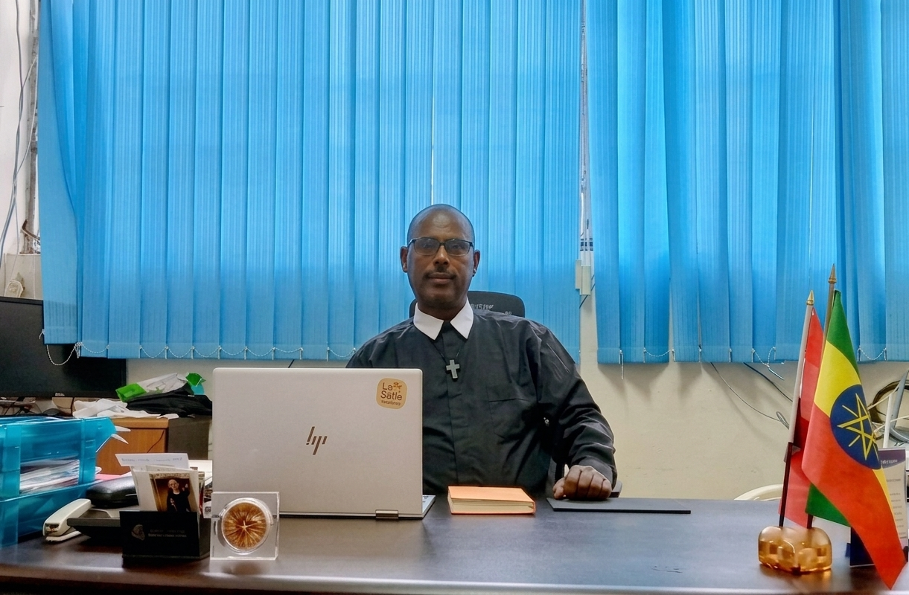
Nurturing the youngest minds with love and care
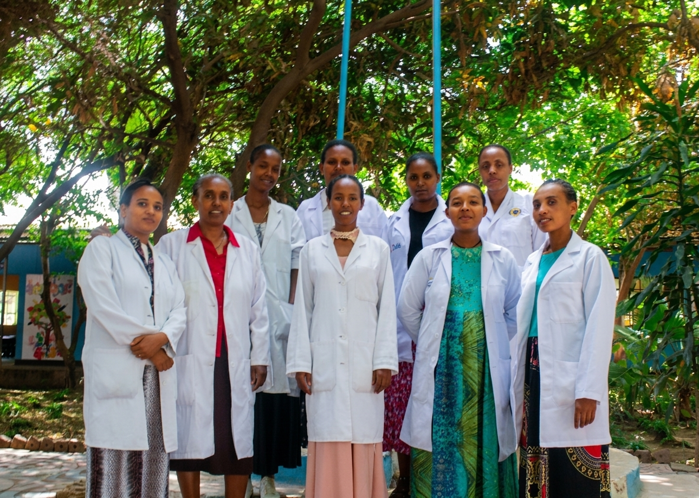
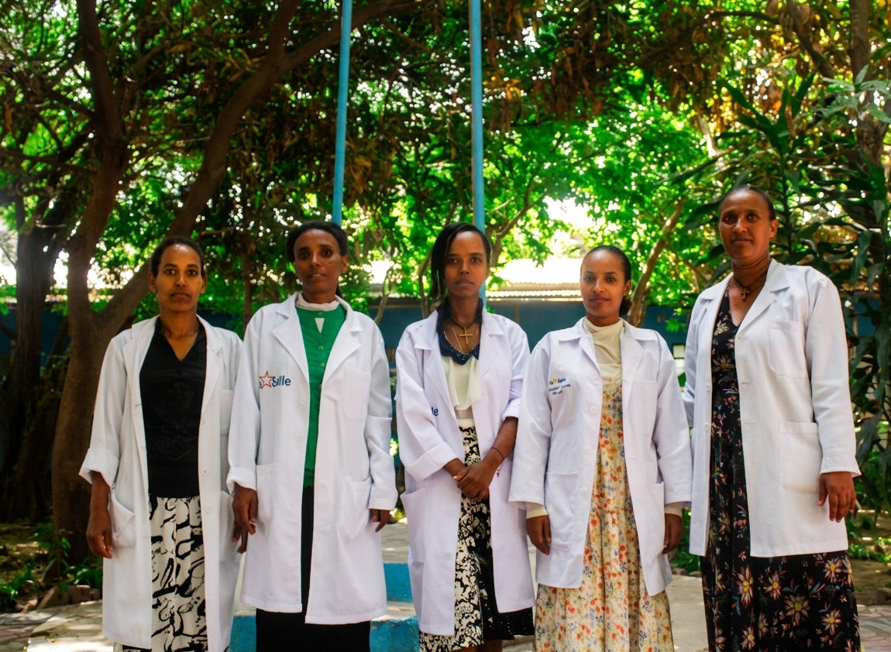
Building strong foundations for lifelong learning
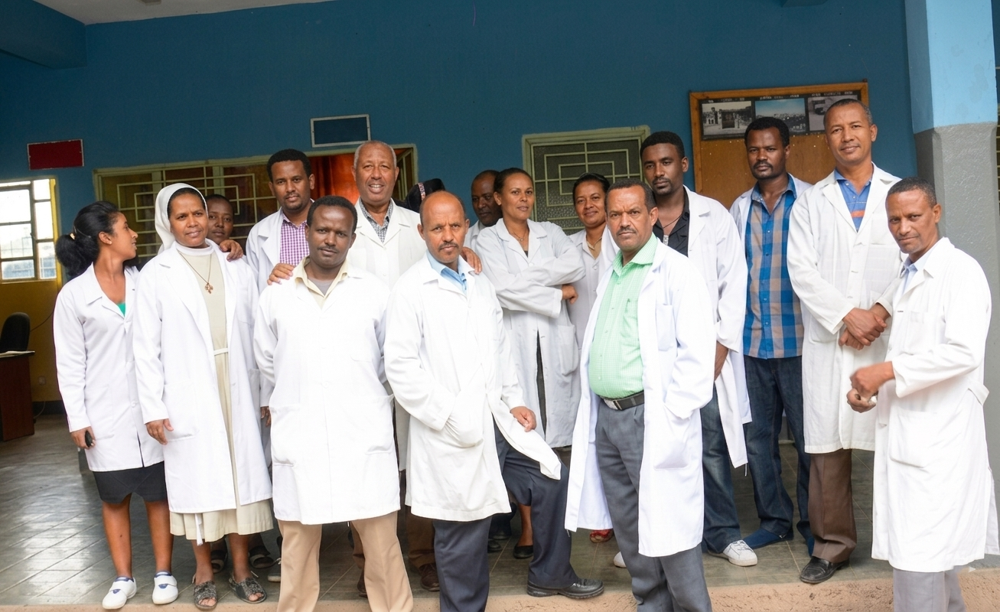

Preparing future leaders for university and beyond
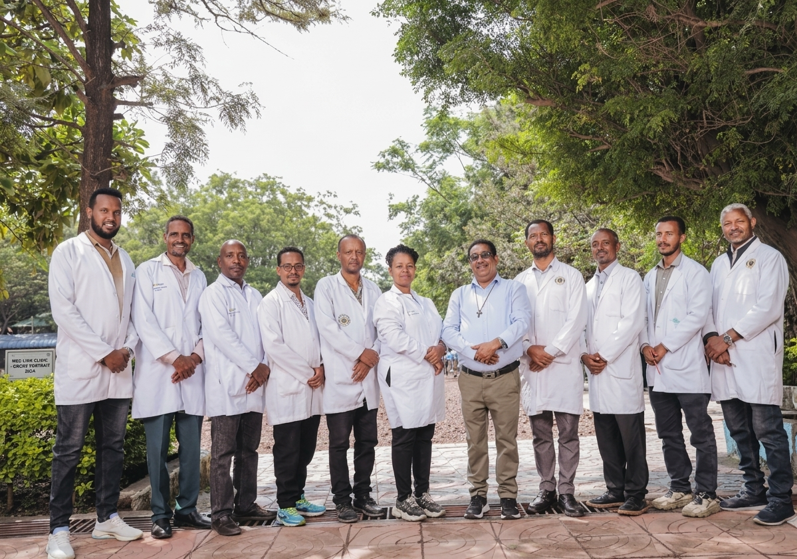
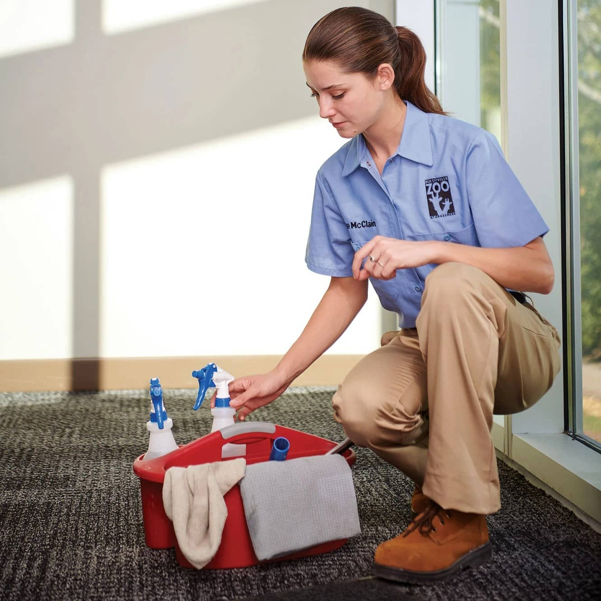
The dedicated team that keeps our school running smoothly
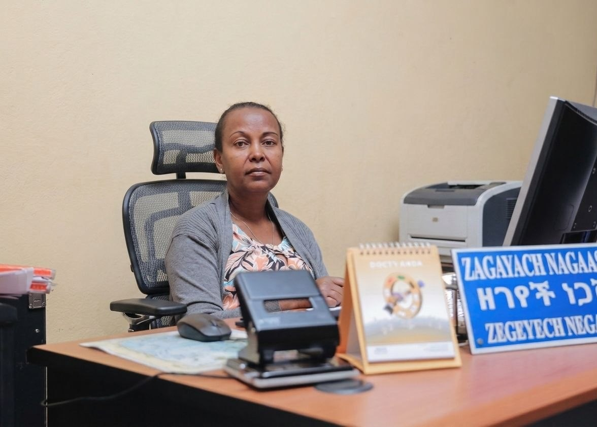
Finance Team
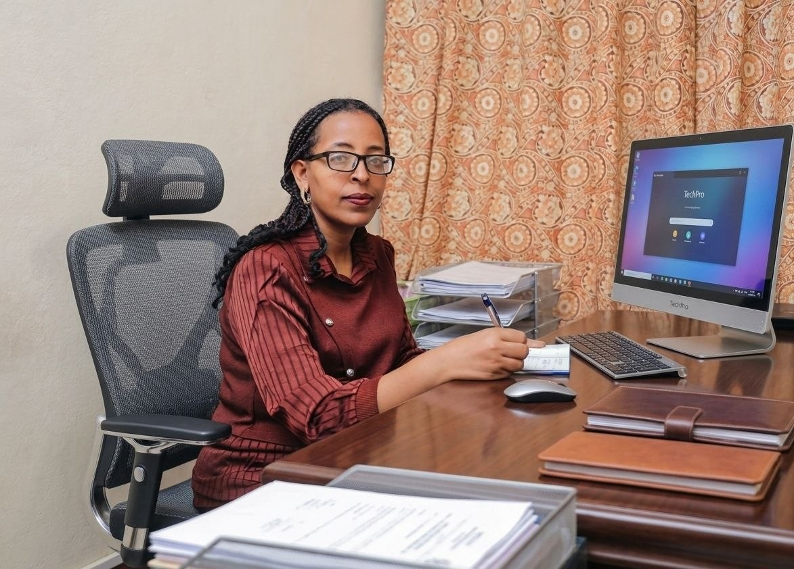
Finance Team
Media Controller & Morning Assembly Leader
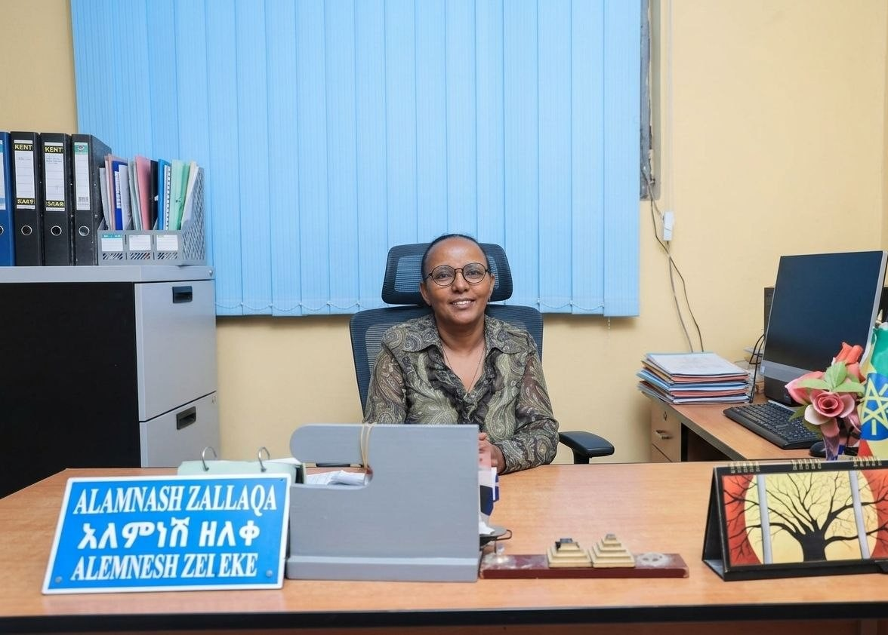
Secretary
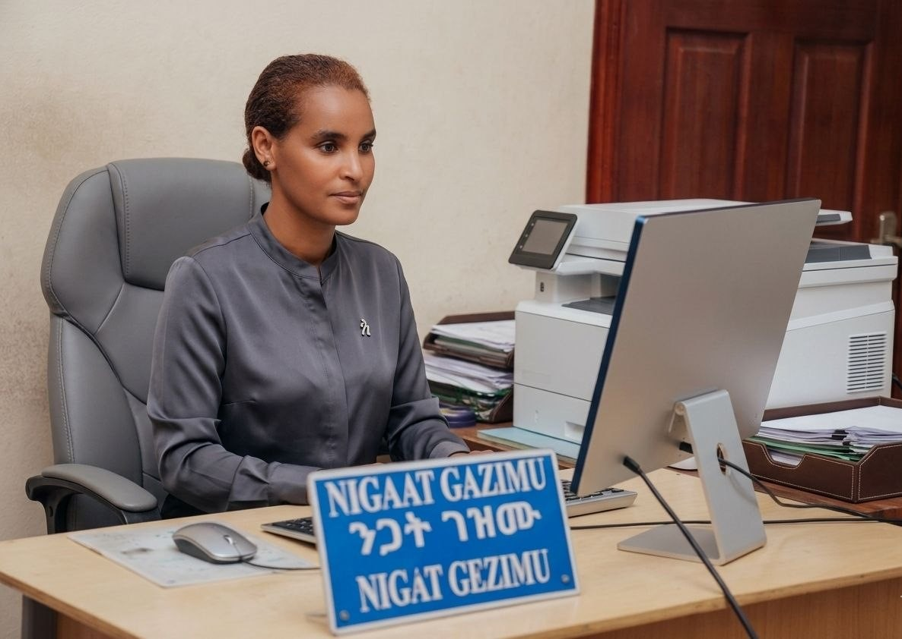
Secretary
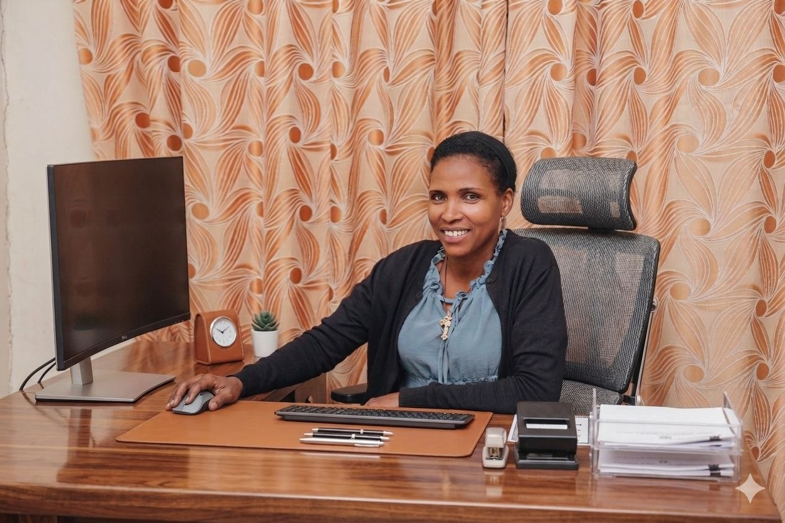
Secretary
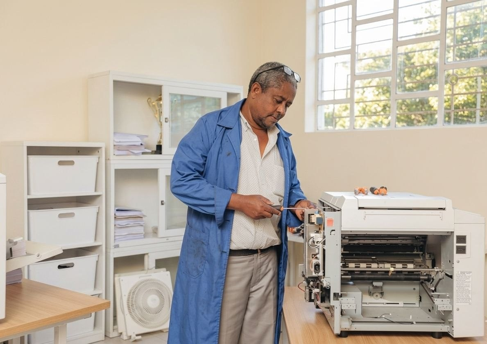
General Service Technician